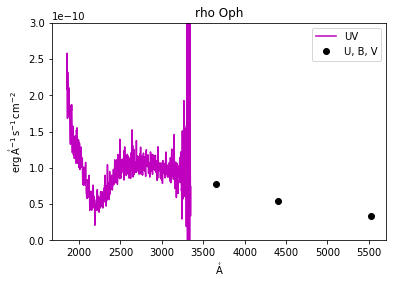
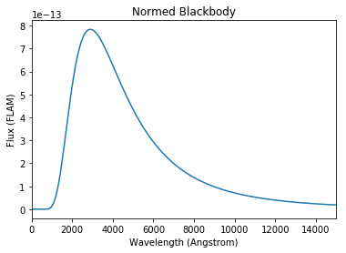
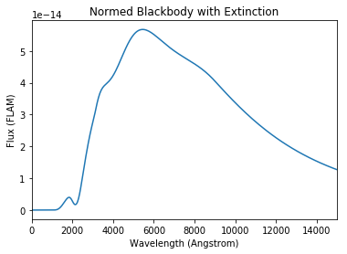

Analyzing interstellar reddening and calculating synthetic photometry¶
Kristen Larson, Lia Corrales, Stephanie T. Douglas, Kelle Cruz
Input from Emir Karamehmetoglu, Pey Lian Lim, Karl Gordon, Kevin Covey
Learning Goals¶
Investigate extinction curve shapes
Deredden spectral energy distributions and spectra
Calculate photometric extinction and reddening
Calculate synthetic photometry for a dust-reddened star by combining
dust_extinctionandsynphotConvert from frequency to wavelength with
astropy.unitequivalenciesUnit support for plotting with
astropy.visualization
Keywords¶
dust extinction, synphot, astroquery, units, photometry, extinction, physics, observational astronomy
Companion Content¶
Summary¶
In this tutorial, we will look at some extinction curves from the literature, use one of those curves to deredden an observed spectrum, and practice invoking a background source flux in order to calculate magnitudes from an extinction model.
The primary libraries we’ll be using are dust_extinction and synphot, which are Astropy affiliated packages.
We recommend installing the two packages in this fashion:
pip install synphot
pip install dust_extinction
This tutorial requires v0.7 or later of dust_extinction. To ensure
that all commands work properly, make sure you have the correct version
installed. If you have v0.6 or earlier installed, run the following
command to upgrade
pip install dust_extinction --upgrade
In[1]:
import matplotlib.pyplot as plt
%matplotlib inline
import numpy as np
import astropy.units as u
from astropy.table import Table
from dust_extinction.parameter_averages import CCM89, F99
from synphot import units, config
from synphot import SourceSpectrum,SpectralElement,Observation,ExtinctionModel1D
from synphot.models import BlackBodyNorm1D
from synphot.spectrum import BaseUnitlessSpectrum
from synphot.reddening import ExtinctionCurve
from astroquery.simbad import Simbad
from astroquery.mast import Observations
import astropy.visualization
Introduction¶
Dust in the interstellar medium (ISM) extinguishes background starlight. The wavelength dependence of the extinction is such that short-wavelength light is extinguished more than long-wavelength light, and we call this effect reddening.
If you’re new to extinction, here is a brief introduction to the types of quantities involved. The fractional change to the flux of starlight is
where \(\tau\) is the optical depth and depends on wavelength. Integrating along the line of sight, the resultant flux is an exponential function of optical depth,
\[\tau_\lambda = -2.303\log\left(\frac{F_\lambda}{F_{\lambda,0}}\right),\]
and define an extinction \(A_\lambda = 1.086 \,\tau_\lambda\) so that
There are two basic take-home messages from this derivation:
Extinction introduces a multiplying factor \(10^{-0.4 A_\lambda}\) to the flux.
Extinction is defined relative to the flux without dust, \(F_{\lambda,0}\).
Once astropy and the affiliated packages are installed, we can import from them as needed:
Example 1: Investigate Extinction Models¶
The dust_extinction package provides various models for extinction
\(A_\lambda\) normalized to \(A_V\). The shapes of normalized
curves are relatively (and perhaps surprisingly) uniform in the Milky
Way. The little variation that exists is often parameterized by the
ratio of extinction (\(A_V\)) to reddening in the blue-visual
(\(E_{B-V}\)),
where \(E_{B-V}\) is differential extinction \(A_B-A_V\). In
this example, we show the \(R_V\)-parameterization for the Clayton,
Cardelli, & Mathis (1989, CCM) and the Fitzpatrick (1999) models. More
model options are available in the ``dust_extinction`
documentation. <https://dust-extinction.readthedocs.io/en/latest/dust_extinction/model_flavors.html>`__
In[2]:
# Create wavelengths array.
wav = np.arange(0.1, 3.0, 0.001)*u.micron
for model in [CCM89, F99]:
for R in (2.0,3.0,4.0):
# Initialize the extinction model
ext = model(Rv=R)
plt.plot(1/wav, ext(wav), label=model.name+' R='+str(R))
plt.xlabel('$\lambda^{-1}$ ($\mu$m$^{-1}$)')
plt.ylabel('A($\lambda$) / A(V)')
plt.legend(loc='best')
plt.title('Some Extinction Laws')
plt.show()
Out[2]:

Astronomers studying the ISM often display extinction curves against inverse wavelength (wavenumber) to show the ultraviolet variation, as we do here. Infrared extinction varies much less and approaches zero at long wavelength in the absence of wavelength-independent, or grey, extinction.
Example 2: Deredden a Spectrum¶
Here we deredden (unextinguish) the IUE ultraviolet spectrum and optical photometry of the star \(\rho\) Oph (HD 147933).
First, we will use astroquery to fetch the archival IUE spectrum from MAST:
In[3]:
obsTable = Observations.query_object("HD 147933",radius="1 arcsec")
obsTable_spec=obsTable[obsTable['dataproduct_type']=='spectrum']
obsTable_spec.pprint()
obsids = ['3000022829']
dataProductsByID = Observations.get_product_list(obsids)
manifest = Observations.download_products(dataProductsByID)
Out[3]:
intentType obs_collection provenance_name ... objID distance
---------- -------------- --------------- ... ---------- ------------------
science IUE -- ... 3500014392 0.0
science IUE -- ... 3500014393 0.0
science IUE -- ... 3500014394 0.0
science IUE -- ... 3500014395 0.0
science IUE -- ... 3500014396 0.0
science IUE -- ... 3500014397 0.0
science IUE -- ... 3500014398 0.0
science IUE -- ... 3500014399 0.0
science IUE -- ... 3500014400 0.0
science IUE -- ... 3500014401 0.0
... ... ... ... ... ...
science IUE -- ... 3500011964 0.0
science IUE -- ... 3500011965 0.0
science IUE -- ... 3500011966 0.0
science IUE -- ... 3500011967 0.0
science IUE -- ... 3500009330 0.0
science IUE -- ... 3500011968 0.0
science IUE -- ... 3500011969 0.0
science IUE -- ... 3500008878 0.0
science HST CALSTIS ... 2039211830 0.5751893673409462
science HST CALSTIS ... 2039212069 0.5751893673409462
science HST CALSTIS ... 2039209130 0.5751893673409462
Length = 109 rows
Downloading URL https://mast.stsci.edu/api/v0.1/Download/file?uri=mast:IUE/url/pub/iue/data/lwr/05000/lwr05639.elbll.gz to ./mastDownload/IUE/lwr05639/lwr05639.elbll.gz ... [Done]
Downloading URL https://mast.stsci.edu/api/v0.1/Download/file?uri=mast:IUE/url/pub/iue/data/lwr/05000/lwr05639.lilo.gz to ./mastDownload/IUE/lwr05639/lwr05639.lilo.gz ... [Done]
Downloading URL https://mast.stsci.edu/api/v0.1/Download/file?uri=mast:IUE/url/pub/iue/data/lwr/05000/lwr05639.melol.gz to ./mastDownload/IUE/lwr05639/lwr05639.melol.gz ... [Done]
Downloading URL https://mast.stsci.edu/api/v0.1/Download/file?uri=mast:IUE/url/pub/iue/data/lwr/05000/lwr05639.raw.gz to ./mastDownload/IUE/lwr05639/lwr05639.raw.gz ... [Done]
Downloading URL https://mast.stsci.edu/api/v0.1/Download/file?uri=mast:IUE/url/pub/iue/data/lwr/05000/lwr05639.rilo.gz to ./mastDownload/IUE/lwr05639/lwr05639.rilo.gz ... [Done]
Downloading URL https://mast.stsci.edu/api/v0.1/Download/file?uri=mast:IUE/url/pub/iue/data/lwr/05000/lwr05639.silo.gz to ./mastDownload/IUE/lwr05639/lwr05639.silo.gz ... [Done]
Downloading URL https://mast.stsci.edu/api/v0.1/Download/file?uri=mast:IUE/url/browse/previews/iue/mx/lwr/05000/gif/lwr05639.gif to ./mastDownload/IUE/lwr05639/lwr05639.gif ... [Done]
Downloading URL https://mast.stsci.edu/api/v0.1/Download/file?uri=mast:IUE/url/pub/iue/data/lwr/05000/lwr05639.mxlo.gz to ./mastDownload/IUE/lwr05639/lwr05639.mxlo.gz ... [Done]
Downloading URL https://mast.stsci.edu/api/v0.1/Download/file?uri=mast:IUE/url/pub/vospectra/iue2/lwr05639mxlo_vo.fits to ./mastDownload/IUE/lwr05639/lwr05639mxlo_vo.fits ... [Done]
We read the downloaded files into an astropy table:
In[4]:
t_lwr = Table.read('./mastDownload/IUE/lwr05639/lwr05639mxlo_vo.fits')
print(t_lwr)
Out[4]:
WAVE [562] FLUX [562] ... QUALITY [562]
Angstrom erg / (Angstrom cm2 s) ...
--------------------- -------------------------- ... -------------
1851.4327 .. 3348.901 2.08651e-10 .. 7.39839e-11 ... 0 .. 16
WARNING: UnitsWarning: 'erg/cm**2/s/angstrom' contains multiple slashes, which is discouraged by the FITS standard [astropy.units.format.generic]
The .quantity extension in the next lines will read the Table
columns into Quantity vectors. Quantities keep the units of the Table
column attached to the numpy array values.
In[5]:
wav_UV = t_lwr['WAVE'][0,].quantity
UVflux = t_lwr['FLUX'][0,].quantity
Now, we use astroquery again to fetch photometry from Simbad to go with the IUE spectrum:
In[6]:
custom_query = Simbad()
custom_query.add_votable_fields('fluxdata(U)','fluxdata(B)','fluxdata(V)')
phot_table=custom_query.query_object('HD 147933')
Umag=phot_table['FLUX_U']
Bmag=phot_table['FLUX_B']
Vmag=phot_table['FLUX_V']
To convert the photometry to flux, we look up some properties of the photometric passbands, including the flux of a magnitude zero star through the each passband, also known as the zero-point of the passband.
In[7]:
wav_U = 0.3660 * u.micron
zeroflux_U_nu = 1.81E-23 * u.Watt/(u.m*u.m*u.Hz)
wav_B = 0.4400 * u.micron
zeroflux_B_nu = 4.26E-23 * u.Watt/(u.m*u.m*u.Hz)
wav_V = 0.5530 * u.micron
zeroflux_V_nu = 3.64E-23 * u.Watt/(u.m*u.m*u.Hz)
The zero-points that we found for the optical passbands are not in the same units as the IUE fluxes. To make matters worse, the zero-point fluxes are \(F_\nu\) and the IUE fluxes are \(F_\lambda\). To convert between them, the wavelength is needed. Fortunately, astropy provides an easy way to make the conversion with equivalencies:
In[8]:
zeroflux_U = zeroflux_U_nu.to(u.erg/u.AA/u.cm/u.cm/u.s,
equivalencies=u.spectral_density(wav_U))
zeroflux_B = zeroflux_B_nu.to(u.erg/u.AA/u.cm/u.cm/u.s,
equivalencies=u.spectral_density(wav_B))
zeroflux_V = zeroflux_V_nu.to(u.erg/u.AA/u.cm/u.cm/u.s,
equivalencies=u.spectral_density(wav_V))
Now we can convert from photometry to flux using the definition of magnitude:
In[9]:
Uflux = zeroflux_U * 10.**(-0.4*Umag)
Bflux = zeroflux_B * 10.**(-0.4*Bmag)
Vflux = zeroflux_V * 10.**(-0.4*Vmag)
Using astropy quantities allow us to take advantage of astropy’s unit
support in plotting. Calling ``astropy.visualization.quantity_support`
explicitly turns the feature
on. <http://docs.astropy.org/en/stable/units/quantity.html#plotting-quantities>`__
Then, when quantity objects are passed to matplotlib plotting functions,
the axis labels are automatically labeled with the unit of the quantity.
In addition, quantities are converted automatically into the same units
when combining multiple plots on the same axes.
In[10]:
astropy.visualization.quantity_support()
plt.plot(wav_UV,UVflux,'m',label='UV')
plt.plot(wav_V,Vflux,'ko',label='U, B, V')
plt.plot(wav_B,Bflux,'ko')
plt.plot(wav_U,Uflux,'ko')
plt.legend(loc='best')
plt.ylim(0,3E-10)
plt.title('rho Oph')
plt.show()
Out[10]:
Finally, we initialize the extinction model, choosing values \(R_V = 5\) and \(E_{B-V} = 0.5\). This star is famous in the ISM community for having large-\(R_V\) dust in the line of sight.
In[11]:
Rv = 5.0 # Usually around 3, but about 5 for this star.
Ebv = 0.5
ext = F99(Rv=Rv)
To extinguish (redden) a spectrum, multiply by the ext.extinguish
function. To unextinguish (deredden), divide by the same
ext.extinguish, as we do here:
In[12]:
plt.semilogy(wav_UV,UVflux,'m',label='UV')
plt.semilogy(wav_V,Vflux,'ko',label='U, B, V')
plt.semilogy(wav_B,Bflux,'ko')
plt.semilogy(wav_U,Uflux,'ko')
plt.semilogy(wav_UV,UVflux/ext.extinguish(wav_UV,Ebv=Ebv),'b',
label='dereddened: EBV=0.5, RV=5')
plt.semilogy(wav_V,Vflux/ext.extinguish(wav_V,Ebv=Ebv),'ro',
label='dereddened: EBV=0.5, RV=5')
plt.semilogy(wav_B,Bflux/ext.extinguish(wav_B,Ebv=Ebv),'ro')
plt.semilogy(wav_U,Uflux/ext.extinguish(wav_U,Ebv=Ebv),'ro')
plt.legend(loc='best')
plt.title('rho Oph')
plt.show()
Out[12]:

Notice that, by dereddening the spectrum, the absorption feature at 2175 Angstrom is removed. This feature can also be seen as the prominent bump in the extinction curves in Example 1. That we have smoothly removed the 2175 Angstrom feature suggests that the values we chose, \(R_V = 5\) and \(E_{B-V} = 0.5\), are a reasonable model for the foreground dust.
Those experienced with dereddening should notice that that
dust_extinction returns \(A_\lambda/A_V\), while other routines
like the IDL fm_unred procedure often return \(A_\lambda/E_{B-V}\)
by default and need to be divided by \(R_V\) in order to compare
directly with dust_extinction.
Example 3: Calculate Color Excess with synphot¶
Calculating broadband photometric extinction is harder than it might look at first. All we have to do is look up \(A_\lambda\) for a particular passband, right? Under the right conditions, yes. In general, no.
Remember that we have to integrate over a passband to get synthetic photometry,
where \(W_\lambda\) is the fraction of incident energy transmitted through a filter. See the detailed appendix in Bessell & Murphy (2012) for an excellent review of the issues and common misunderstandings in synthetic photometry.
There is an important point to be made here. The expression above does not simplify any further. Strictly speaking, it is impossible to convert spectral extinction \(A_\lambda\) into a magnitude system without knowing the wavelength dependence of the source’s original flux across the filter in question. As a special case, if we assume that the source flux is constant in the band (i.e. \(F_\lambda = F\)), then we can cancel these factors out from the integrals, and extinction in magnitudes becomes the weighted average of the extinction factor across the filter in question. In that special case, \(A_\lambda\) at \(\lambda_{\rm eff}\) is a good approximation for magnitude extinction.
In this example, we will demonstrate the more general calculation of photometric extinction. We use a blackbody curve for the flux before the dust, apply an extinction curve, and perform synthetic photometry to calculate extinction and reddening in a magnitude system.
First, let’s get the filter transmission curves:
In[13]:
# Optional, for when the STScI ftp server is not answering:
config.conf.vega_file='http://ssb.stsci.edu/cdbs/calspec/alpha_lyr_stis_008.fits'
config.conf.johnson_u_file='http://ssb.stsci.edu/cdbs/comp/nonhst/johnson_u_004_syn.fits'
config.conf.johnson_b_file='http://ssb.stsci.edu/cdbs/comp/nonhst/johnson_b_004_syn.fits'
config.conf.johnson_v_file='http://ssb.stsci.edu/cdbs/comp/nonhst/johnson_v_004_syn.fits'
config.conf.johnson_r_file='http://ssb.stsci.edu/cdbs/comp/nonhst/johnson_r_003_syn.fits'
config.conf.johnson_i_file='http://ssb.stsci.edu/cdbs/comp/nonhst/johnson_i_003_syn.fits'
config.conf.bessel_j_file='http://ssb.stsci.edu/cdbs/comp/nonhst/bessell_j_003_syn.fits'
config.conf.bessel_h_file='http://ssb.stsci.edu/cdbs/comp/nonhst/bessell_h_004_syn.fits'
config.conf.bessel_k_file='http://ssb.stsci.edu/cdbs/comp/nonhst/bessell_k_003_syn.fits'
u_band = SpectralElement.from_filter('johnson_u')
b_band = SpectralElement.from_filter('johnson_b')
v_band = SpectralElement.from_filter('johnson_v')
r_band = SpectralElement.from_filter('johnson_r')
i_band = SpectralElement.from_filter('johnson_i')
j_band = SpectralElement.from_filter('bessel_j')
h_band = SpectralElement.from_filter('bessel_h')
k_band = SpectralElement.from_filter('bessel_k')
If you are running this with your own python, see the synphot documentation on how to install your own copy of the necessary files.
Next, let’s make a background flux to which we will apply extinction.
Here we make a 10,000 K blackbody using the model mechanism from within
synphot and normalize it to \(V\) = 10 in the Vega-based
magnitude system.
In[14]:
# First, create a blackbody at some temperature.
sp = SourceSpectrum(BlackBodyNorm1D, temperature=10000)
# sp.plot(left=1, right=15000, flux_unit='flam', title='Blackbody')
# Get the Vega spectrum as the zero point flux.
vega = SourceSpectrum.from_vega()
# vega.plot(left=1, right=15000)
# Normalize the blackbody to some chosen magnitude, say V = 10.
vmag = 10.
v_band = SpectralElement.from_filter('johnson_v')
sp_norm = sp.normalize(vmag * units.VEGAMAG, v_band, vegaspec=vega)
sp_norm.plot(left=1, right=15000, flux_unit='flam', title='Normed Blackbody')
Out[14]:
Now we initialize the extinction model and choose an extinction of
\(A_V\) = 2. To get the dust_extinction model working with
synphot, we create a wavelength array and make a spectral element
with the extinction model as a lookup table.
In[15]:
# Initialize the extinction model and choose the extinction, here Av = 2.
ext = CCM89(Rv=3.1)
Av = 2.
# Create a wavelength array.
wav = np.arange(0.1, 3, 0.001)*u.micron
# Make the extinction model in synphot using a lookup table.
ex = ExtinctionCurve(ExtinctionModel1D,
points=wav, lookup_table=ext.extinguish(wav, Av=Av))
sp_ext = sp_norm*ex
sp_ext.plot(left=1, right=15000, flux_unit='flam',
title='Normed Blackbody with Extinction')
Out[15]:
Synthetic photometry refers to modeling an observation of a star by multiplying the theoretical model for the astronomical flux through a certain filter response function, then integrating.
In[16]:
# "Observe" the star through the filter and integrate to get photometric mag.
sp_obs = Observation(sp_ext, v_band)
sp_obs_before = Observation(sp_norm, v_band)
# sp_obs.plot(left=1, right=15000, flux_unit='flam',
# title='Normed Blackbody with Extinction through V Filter')
Next, synphot performs the integration and computes magnitudes in
the Vega system.
In[17]:
sp_stim_before = sp_obs_before.effstim(flux_unit='vegamag', vegaspec=vega)
sp_stim = sp_obs.effstim(flux_unit='vegamag', vegaspec=vega)
print('before dust, V =', np.round(sp_stim_before,1))
print('after dust, V =', np.round(sp_stim,1))
# Calculate extinction and compare to our chosen value.
Av_calc = sp_stim - sp_stim_before
print('$A_V$ = ', np.round(Av_calc,1))
Out[17]:
before dust, V = 10.0 VEGAMAG
after dust, V = 12.0 VEGAMAG
$A_V$ = 2.0 VEGAMAG
This is a good check for us to do. We normalized our spectrum to \(V\) = 10 mag and added 2 mag of visual extinction, so the synthetic photometry procedure should reproduce these chosen values, and it does. Now we are ready to find the extinction in other passbands.
We calculate the new photometry for the rest of the Johnson optical and the Bessell infrared filters. We calculate extinction \(A = \Delta m\) and plot color excess, \(E(\lambda - V) = A_\lambda - A_V\).
Notice that synphot calculates the effective wavelength of the
observations for us, which is very useful for plotting the results. We
show reddening with the model extinction curve for comparison in the
plot.
In[18]:
bands = [u_band,b_band,v_band,r_band,i_band,j_band,h_band,k_band]
for band in bands:
# Calculate photometry with dust:
sp_obs = Observation(sp_ext, band, force='extrap')
obs_effstim = sp_obs.effstim(flux_unit='vegamag', vegaspec=vega)
# Calculate photometry without dust:
sp_obs_i = Observation(sp_norm, band, force='extrap')
obs_i_effstim = sp_obs_i.effstim(flux_unit='vegamag', vegaspec=vega)
# Extinction = mag with dust - mag without dust
# Color excess = extinction at lambda - extinction at V
color_excess = obs_effstim - obs_i_effstim - Av_calc
plt.plot(sp_obs_i.effective_wavelength(), color_excess,'or')
print(np.round(sp_obs_i.effective_wavelength(),1), ',',
np.round(color_excess,2))
# Plot the model extinction curve for comparison
plt.plot(wav,Av*ext(wav)-Av,'--k')
plt.ylim([-2,2])
plt.xlabel('$\lambda$ (Angstrom)')
plt.ylabel('E($\lambda$-V)')
plt.title('Reddening of T=10,000K Background Source with Av=2')
plt.show()
Out[18]:
3601.5 Angstrom , 1.12 VEGAMAG
4368.9 Angstrom , 0.63 VEGAMAG
5463.8 Angstrom , 0.0 VEGAMAG
6810.6 Angstrom , -0.48 VEGAMAG
8619.6 Angstrom , -0.97 VEGAMAG
12266.5 Angstrom , -1.43 VEGAMAG
16351.9 Angstrom , -1.65 VEGAMAG
21956.7 Angstrom , -1.79 VEGAMAG
Exercise¶
Try changing the blackbody temperature to something very hot or very cool. Are the color excess values the same? Have the effective wavelengths changed?
Note that the photometric extinction changes because the filter transmission is not uniform. The observed throughput of the filter depends on the shape of the background source flux.
In[None]: